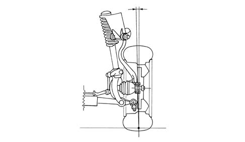
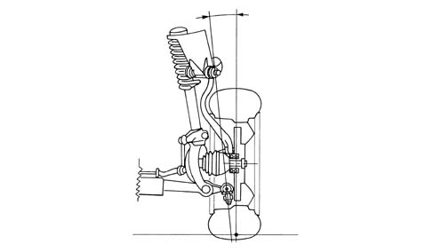
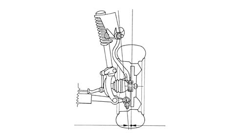
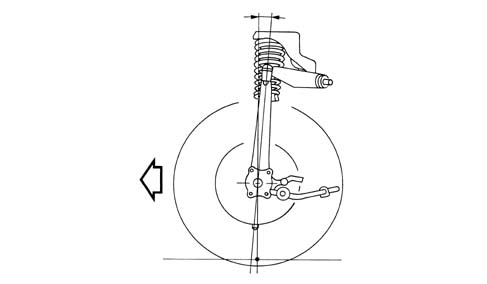
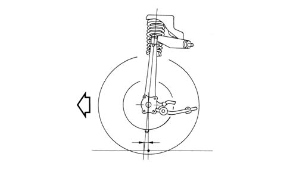

INTRODUCTION - FRONT SUSPENSION
- Path
- Descriptions > 44 SUSPENSION AND WHEELS > 4410 FRONT SUSPENSION > INTRODUCTION - FRONT SUSPENSION
- Kind
- system description
- Applies to
- all engines; all production periods
- Interactive page
- https://sloeber94.github.io/elrnDB-aGt/en/#/125000374
Applies to: all engines; all production periods
INTRODUCTION
The overlapping track control arms, which form two of the sides of the suspension's ideal qadrilateral, are in effect triangles hinged by the apex with the hub's vertical link and by the base with the suspension frame at the bottom, and the raised shell at the top. The quadrilateral configuration permits greater control of the wheel movements and greater adjustment possibility.
For geometry and characteristic angles
Characteristic of working principle 4450A WHEEL GEOMETRY
.
The geometry of the suspension uses the shock absorber/spring assembly purely as a damping and flexible element, which does not form part of the kinematic structure.
CONSTRUCTION FEATURES
The geometric characteristics of the front suspension have enabled the following characteristics to be obtained:
increase in negative camber of the wheel during the suspension compression stage

a condition which compensates for the lean of the vehicle and keeps the tyre less inclined in relation to the ground, improving grip and so, with appropriate balancing with the rear axle, giving greater transversal acceleration;
limiting of the transversal inclination of the steering axle 'king pin angle' and the transversal ground arm

a condition which allows the ground arm to be reduced and the distance from the wheel centre of the steering axle, improving driveability, the return of the wheels to straight-line driving after steering and the tenance of straight-line driving in the various driving conditions;
reduction of the transversal ground arm

a condition which reduces the self-steering effect of asymmetrical driving forces between right and left wheel and reducing effort when steering from a standstill, also cancelling the repercussions on the steering wheel which occur when the front axle meets unevenness on the road;
a high caster angle.

a condition which allows two conditions of fundamental importance for driving the vehicle: the first is stability of straight-line driving and the return of the steering wheel after steering, and the second is the inclination of the wheel towards the outside (negative camber) during steering. This condition compensates for the leaning due to the rolling of the car, especially on curves with a straight radius.
In addition, the geometry of the suspension minimizes the variation of the caster angle during compression of the suspension, compensating for the reduction caused by the pitching of the vehicle during braking, with the advantage of increasing the precision of entry into the bend and improving the progressiveness of steering;
increase in the longitudinal ground arm.

a condition which leads to definite self-aligning of the lateral force, proportional to the lateral acceleration with which the bend is negotiated, obtaining a load on the steering wheel which gradually increases up to the grip limit, facilitating the re-alignment of the vehicle at the grip limit.
In addition to the geometric characteristics described, the suspension allows the following:
Inclination of the track control arms towards the front of the car, causing:
- stretching of the suspension during braking;
- compression of the suspension during acceleration.
With the advantage of:
- counteracting the tendency of the car's nose to dip during braking (anti-dive effect);
- counteracting the tendency of the car's nose to lift during acceleration (anti-lift effect).
Steering of the diverging wheel during the suspension compression stage, a condition which allows:
- a lighter steering action by the driver when entering bends.
With the advantage of:
- improving the smoothness of entering bends, especially on slippery ground.
Rigidity of the bushes hinging the track control arms and steering arm
The rigidity of the various bushes permits the following:
- to maximise steering precision, cancelling all steering under the effect of the lateral force on the bend;
- to increase tyre grip, limiting to a maximum the inclination of the tyre in relation to the ground on a bend (limited loss of camber);
- to increase the obstacle absorption comfort, making maximum use of the suspension's longitudinal flexibility;
- to maintain the direction of the car, as the suspension's geometry allows the wheel to move backwards without steering;
- optimum capacity for absorption of the vertical impact thanks to the conformation of the assembly attaching the shock absorber to the shell;
- maximum absorption of vibrations on the steering wheel over rough ground.